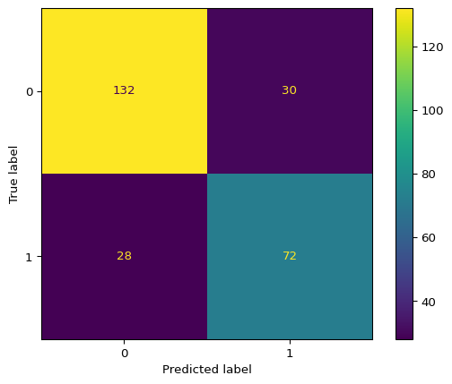

import pandas as pd
from sklearn.datasets import fetch_openml
from sklearn.model_selection import GridSearchCV, cross_val_score
from sklearn.impute import SimpleImputer
from sklearn.preprocessing import OneHotEncoder, StandardScaler
from sklearn.compose import ColumnTransformer
from sklearn.pipeline import Pipeline
from sklearn.neighbors import KNeighborsClassifier
from sklearn.metrics import classification_report, confusion_matrix, ConfusionMatrixDisplay
from sklearn.model_selection import train_test_splitK-Nearest Neighbors (KNN)
Importar librerías
Cargar dataset
df = fetch_openml('titanic',version=1,as_frame=True)['frame']
df| pclass | survived | name | sex | age | sibsp | parch | ticket | fare | cabin | embarked | boat | body | home.dest | |
|---|---|---|---|---|---|---|---|---|---|---|---|---|---|---|
| 0 | 1 | 1 | Allen, Miss. Elisabeth Walton | female | 29.0000 | 0 | 0 | 24160 | 211.3375 | B5 | S | 2 | NaN | St Louis, MO |
| 1 | 1 | 1 | Allison, Master. Hudson Trevor | male | 0.9167 | 1 | 2 | 113781 | 151.5500 | C22 C26 | S | 11 | NaN | Montreal, PQ / Chesterville, ON |
| 2 | 1 | 0 | Allison, Miss. Helen Loraine | female | 2.0000 | 1 | 2 | 113781 | 151.5500 | C22 C26 | S | NaN | NaN | Montreal, PQ / Chesterville, ON |
| 3 | 1 | 0 | Allison, Mr. Hudson Joshua Creighton | male | 30.0000 | 1 | 2 | 113781 | 151.5500 | C22 C26 | S | NaN | 135.0 | Montreal, PQ / Chesterville, ON |
| 4 | 1 | 0 | Allison, Mrs. Hudson J C (Bessie Waldo Daniels) | female | 25.0000 | 1 | 2 | 113781 | 151.5500 | C22 C26 | S | NaN | NaN | Montreal, PQ / Chesterville, ON |
| ... | ... | ... | ... | ... | ... | ... | ... | ... | ... | ... | ... | ... | ... | ... |
| 1304 | 3 | 0 | Zabour, Miss. Hileni | female | 14.5000 | 1 | 0 | 2665 | 14.4542 | NaN | C | NaN | 328.0 | NaN |
| 1305 | 3 | 0 | Zabour, Miss. Thamine | female | NaN | 1 | 0 | 2665 | 14.4542 | NaN | C | NaN | NaN | NaN |
| 1306 | 3 | 0 | Zakarian, Mr. Mapriededer | male | 26.5000 | 0 | 0 | 2656 | 7.2250 | NaN | C | NaN | 304.0 | NaN |
| 1307 | 3 | 0 | Zakarian, Mr. Ortin | male | 27.0000 | 0 | 0 | 2670 | 7.2250 | NaN | C | NaN | NaN | NaN |
| 1308 | 3 | 0 | Zimmerman, Mr. Leo | male | 29.0000 | 0 | 0 | 315082 | 7.8750 | NaN | S | NaN | NaN | NaN |
1309 rows × 14 columns
Info del dataset
df.info()<class 'pandas.core.frame.DataFrame'>
RangeIndex: 1309 entries, 0 to 1308
Data columns (total 14 columns):
# Column Non-Null Count Dtype
--- ------ -------------- -----
0 pclass 1309 non-null int64
1 survived 1309 non-null category
2 name 1309 non-null object
3 sex 1309 non-null category
4 age 1046 non-null float64
5 sibsp 1309 non-null int64
6 parch 1309 non-null int64
7 ticket 1309 non-null object
8 fare 1308 non-null float64
9 cabin 295 non-null object
10 embarked 1307 non-null category
11 boat 486 non-null object
12 body 121 non-null float64
13 home.dest 745 non-null object
dtypes: category(3), float64(3), int64(3), object(5)
memory usage: 116.8+ KBFiltrado de columnas relevantes
df = df[['pclass','survived','sex','age','sibsp','parch','embarked']]
df| pclass | survived | sex | age | sibsp | parch | embarked | |
|---|---|---|---|---|---|---|---|
| 0 | 1 | 1 | female | 29.0000 | 0 | 0 | S |
| 1 | 1 | 1 | male | 0.9167 | 1 | 2 | S |
| 2 | 1 | 0 | female | 2.0000 | 1 | 2 | S |
| 3 | 1 | 0 | male | 30.0000 | 1 | 2 | S |
| 4 | 1 | 0 | female | 25.0000 | 1 | 2 | S |
| ... | ... | ... | ... | ... | ... | ... | ... |
| 1304 | 3 | 0 | female | 14.5000 | 1 | 0 | C |
| 1305 | 3 | 0 | female | NaN | 1 | 0 | C |
| 1306 | 3 | 0 | male | 26.5000 | 0 | 0 | C |
| 1307 | 3 | 0 | male | 27.0000 | 0 | 0 | C |
| 1308 | 3 | 0 | male | 29.0000 | 0 | 0 | S |
1309 rows × 7 columns
Eliminación de datos faltantes y conversión del target
df = df[df['survived'].notna()]
df['survived'] = df['survived'].astype(int)Features y target
X = df.drop(columns='survived') #features
y = df['survived'] #targetIdentificación de features
cat_cols = ['sex','embarked'] #categorical nominal => OneHotEncoder
num_cols = ['age','sibsp','parch','pclass']Preprocesamiento
Generación de pipeline por tipo de variable
categorical_pipeline = Pipeline([
('imputacion_cat',SimpleImputer(strategy='most_frequent')),
('encodage_cat',OneHotEncoder(handle_unknown='ignore'))
])
# Mujer, Hombre => (1,0) => StandarScaler() NO HACER
numerical_pipeline = Pipeline([
('imputacion_num',SimpleImputer(strategy='mean')),
('escalamiento',StandardScaler())
])Aplicar ColumnTransformer
preprocessor = ColumnTransformer([
('cat',categorical_pipeline,cat_cols),
('num',numerical_pipeline,num_cols)
])Pipeline
pipeline = Pipeline([
('preprocessor',preprocessor),
('classificador',KNeighborsClassifier())
])Train test split
X_train, X_test, y_train, y_test = train_test_split(
X,
y,
test_size=0.2,
stratify=y,
random_state=42
)Gridsearch
Definir el param_grid
param_grid = {
'classificador__n_neighbors':list(range(1,5)),
'classificador__weights':['uniform','distance'],
'classificador__metric':['minkowski','euclidean','manhattan']
}Realizar el Gridseach
grid = GridSearchCV(pipeline,param_grid,cv=5,scoring='f1')
grid.fit(X_train,y_train)GridSearchCV(cv=5,
estimator=Pipeline(steps=[('preprocessor',
ColumnTransformer(transformers=[('cat',
Pipeline(steps=[('imputacion_cat',
SimpleImputer(strategy='most_frequent')),
('encodage_cat',
OneHotEncoder(handle_unknown='ignore'))]),
['sex',
'embarked']),
('num',
Pipeline(steps=[('imputacion_num',
SimpleImputer()),
('escalamiento',
StandardScaler())]),
['age',
'sibsp',
'parch',
'pclass'])])),
('classificador',
KNeighborsClassifier())]),
param_grid={'classificador__metric': ['minkowski', 'euclidean',
'manhattan'],
'classificador__n_neighbors': [1, 2, 3, 4],
'classificador__weights': ['uniform', 'distance']},
scoring='f1')In a Jupyter environment, please rerun this cell to show the HTML representation or trust the notebook. On GitHub, the HTML representation is unable to render, please try loading this page with nbviewer.org.
Parameters
| estimator | Pipeline(step...lassifier())]) | |
| param_grid | {'classificador__metric': ['minkowski', 'euclidean', ...], 'classificador__n_neighbors': [1, 2, ...], 'classificador__weights': ['uniform', 'distance']} | |
| scoring | 'f1' | |
| n_jobs | None | |
| refit | True | |
| cv | 5 | |
| verbose | 0 | |
| pre_dispatch | '2*n_jobs' | |
| error_score | nan | |
| return_train_score | False |
Parameters
| transformers | [('cat', ...), ('num', ...)] | |
| remainder | 'drop' | |
| sparse_threshold | 0.3 | |
| n_jobs | None | |
| transformer_weights | None | |
| verbose | False | |
| verbose_feature_names_out | True | |
| force_int_remainder_cols | 'deprecated' |
['sex', 'embarked']
Parameters
| missing_values | nan | |
| strategy | 'most_frequent' | |
| fill_value | None | |
| copy | True | |
| add_indicator | False | |
| keep_empty_features | False |
Parameters
| categories | 'auto' | |
| drop | None | |
| sparse_output | True | |
| dtype | <class 'numpy.float64'> | |
| handle_unknown | 'ignore' | |
| min_frequency | None | |
| max_categories | None | |
| feature_name_combiner | 'concat' |
['age', 'sibsp', 'parch', 'pclass']
Parameters
| missing_values | nan | |
| strategy | 'mean' | |
| fill_value | None | |
| copy | True | |
| add_indicator | False | |
| keep_empty_features | False |
Parameters
| copy | True | |
| with_mean | True | |
| with_std | True |
Parameters
| n_neighbors | 3 | |
| weights | 'uniform' | |
| algorithm | 'auto' | |
| leaf_size | 30 | |
| p | 2 | |
| metric | 'manhattan' | |
| metric_params | None | |
| n_jobs | None |
Obtener el mejor best_estimator
best_model = grid.best_estimator_Presentar el mejor estimator
print("MEJORES PARAMETROS: \n",grid.best_params_)MEJORES PARAMETROS:
{'classificador__metric': 'manhattan', 'classificador__n_neighbors': 3, 'classificador__weights': 'uniform'}Evaluación
y_pred = best_model.predict(X_test)Reporte del modelo
print('REPORTE DE CLASIFICACION:\n',classification_report(y_test,y_pred))
ConfusionMatrixDisplay(confusion_matrix(y_test,y_pred)).plot()REPORTE DE CLASIFICACION:
precision recall f1-score support
0 0.82 0.81 0.82 162
1 0.71 0.72 0.71 100
accuracy 0.78 262
macro avg 0.77 0.77 0.77 262
weighted avg 0.78 0.78 0.78 262
